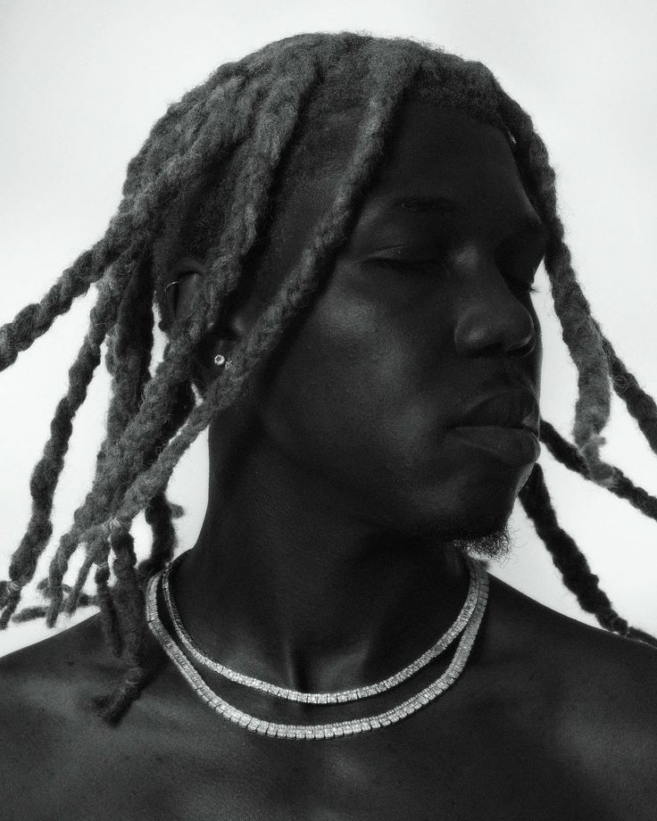

Playboi Carti hinted that he would be dropping NARCISSIST — a mysterious project announced a few weeks ago — on Sept. 13. Since that announcement, Carti has been MIA, leaving fans to wonder if his project will actually release sometime soon.s.
Destroy Lonely

SINGNEE
Destroy Lonely has been making waves with his hit single “Bane” an autotuned collection of flows. His ability to seamlessly transition from delivery to delivery makes him sound like two rappers on the same track. He recently implied that his heavily anticipated album, No Stylist, will be arriving shortly after his show on Sept. 24.s.
Ken Carson
SIGNEE
Ken Car$on has been seeing a huge increase in popularity in the last year with his EP Teen X: Relapsed and his debut album Project X. His use of heavy synths and 808s with repetitive hooks is reminiscent of Carti’s most recent “punk” sound with his own twist. He has production credits on “Beno!” off of Whole Lotta Red as well as close affiliation with production team 808 Mafia, proving to be a multitalented artist.